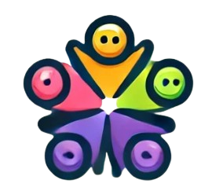

 About In A Blink
In A Blink is a fun, fast-paced multiplayer drawing game where players recreate images from memory. Each round, a random image is displayed for a few seconds, and players then draw what they remember. Afterward, participants vote on whose drawing is the most accurate or creative.
Features:
- Multiplayer gameplay
- Time-limited drawing challenges
- Real-time voting and leaderboard